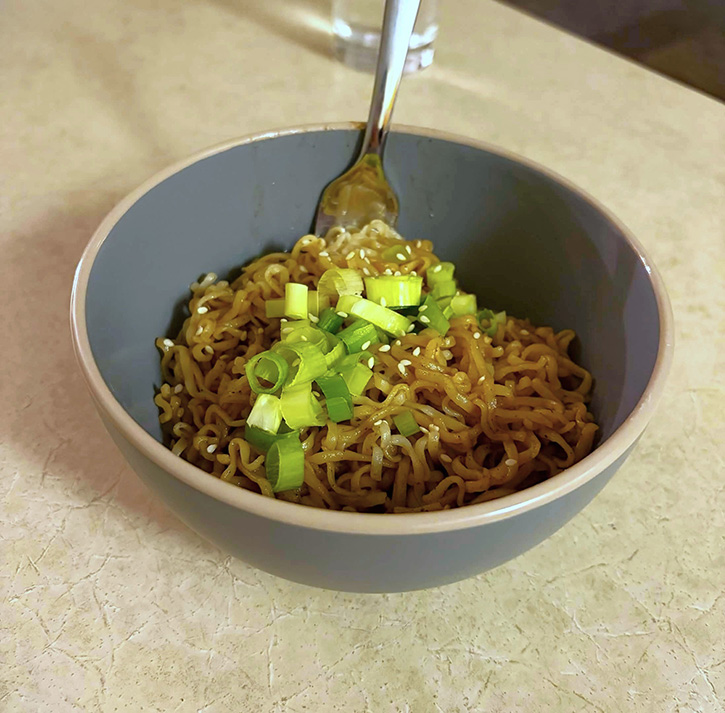
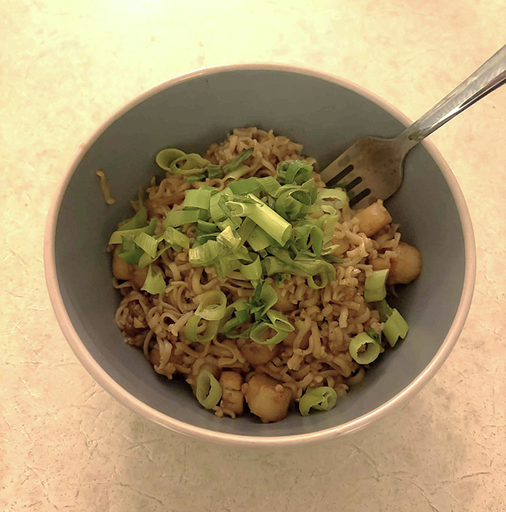

Hoisin Garlic Noodles
by Hetty Lui McKinnon; published April 16, 2025 on NYT Cooking.
A simple, delicious, and protein-agnostic Asian noodles recipe. A great choice for college students who want a quick and cheap bite to eat!
This recipe is best served hot. Refrigerate any leftovers in an airtight glass container (or similar), and reheat when serving.
Ingredients
- Salt and pepper to taste
- 14 ounces dried wheat, egg, or rice noodles
- 1/4 cup hoisin sauce
- 2 tablespoons soy sauce
- 1 tablespoon toasted sesame oil
- 2 teaspoons maple syrup or honey
- Vegetable oil
- 6 medium garlic cloves, finely chopped
- 6 scallions, white and green parts separated, thinly sliced
- 4 tablespoons toasted white sesame seeds
Instructions
Total Time • 25 minutes (5 min. prep, 20 min. cook)
Yield • 4 servings
- Bring a large pot of salted water to a boil. Add the noodles and cook according to package instructions until al dente. Drain and rinse until the noodles are cool.
- Meanwhile, in a small bowl, combine hoisin sauce, soy sauce, sesame oil and maple syrup; set aside.
- Heat a large 12-inch skillet on medium-high for 2 minutes. Add 1 to 2 tablespoons of oil along with the garlic and white parts of the scallions. Stir until fragrant, about 30 seconds (but don’t let the garlic burn!). Immediately add the sauce and then the noodles, and toss well until the noodles are evenly coated.
- Leave the noodles to cook, undisturbed, until they start sticking to the pan and the bottom looks crispy, 2 to 3 minutes. Taste and season with salt (if needed) and pepper.
- To serve, transfer to bowls and top with the sesame seeds and the green parts of the scallions.

